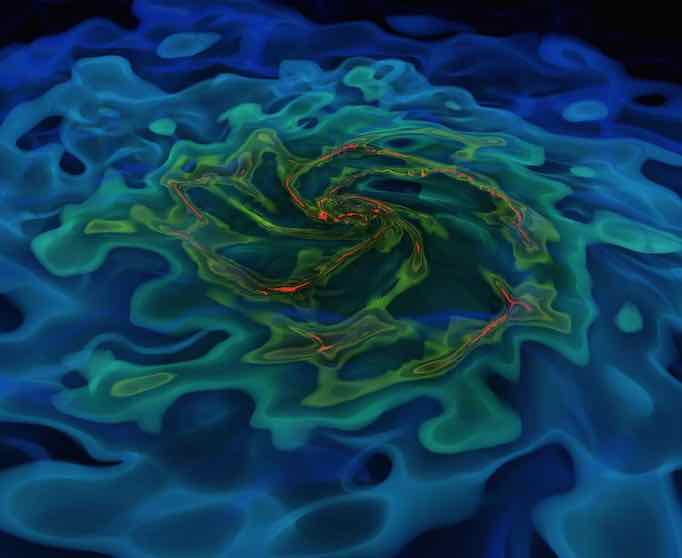

Past Opportunities
Application Deadline
January 1, 2019 [This position has been filled; please wait for another announcement in the future]
Position Starts
As early as March or as late as September, 2019
Contact Information
Center for Theoretical Physics, Department of Physics and Astronomy
Seoul National University, Seoul 08826, Korea
Prof. Ji-hoon Kim (mornkr@snu.ac.kr)
The Computational Cosmology Group in the Department of Physics and Astronomy at Seoul National University invites applications for 1-2 postdoctoral research fellows. The successful candidates will work with Prof. Ji-hoon Kim on simulations of supermassive black holes, galaxies and large-scale structures, and/or assist with the AGORA High-resolution Galaxy Simulations Comparison Project. They will also have opportunities to collaborate with other members of the Department, to mentor students, and to carry out independent research projects. They will have access to local high-performance computing facilities as well as the supercomputing resources at KISTI.
Appointments are initially for one year (with a flexible starting date between March and September 2019), with extension for additional two years contingent upon mutual agreement and research performance. The salary will be commensurate with the applicant's qualification and experience. Funds will be available for conferences, travel, and publications. National health insurance coverage and pension will be available. University-subsidized housing on campus is available for foreign nationals. This position is funded in part by the Brain Korea 21 Plus Project of Korean Ministry of Education, Science and Technology.
Applicants should have completed a Ph.D. or equivalent degree in astrophysics, astronomy, physics, or a closely related area prior to commencing. Expertise in running and analyzing cosmological simulations is desired. Complete applications should include [1] a cover letter, [2] a CV (duration of matriculation and graduation should be dated), [3] a list of publications, [4] a statement of past research (up to 3 pages), [5] a statement of future research interests and plans (up to 3 pages), and [6] the names and email addresses of reference letter writers, as a single PDF file sent to mornkr@snu.ac.kr no later than January 1, 2019. Applicants should arrange for at least 3 letters of recommendation to be sent directly to the same email address by the same deadline. The position remains open until filled. Interested applicants are welcome to contact Prof. Ji-hoon Kim with questions at any time.
The successful candidates will join the Department with more than 50 faculties actively working on diverse topics -- astrophysics and cosmology, high-energy and particle physics, nuclear physics, atomic physics, condensed matter physics, etc -- along with a group of highly motivated students and postdocs (physics program, astronomy program; for more information about life at SNU, visit here). Our research group is committed to cultivating an inclusive work environment. All qualified applicants will receive full consideration for employment without regard to national origin, religion, race, gender, sexual orientation, and disabilities.
(Eligible applicants may consider applying for a prestigious Korea Research Fellowship jointly with our group in 2019. See the announcement for the past year here.)
{kind=link}

-
Postdoctoral Position (2024)
Postdoctoral Position (2019) - My mentoring experiences can be found in my CV.